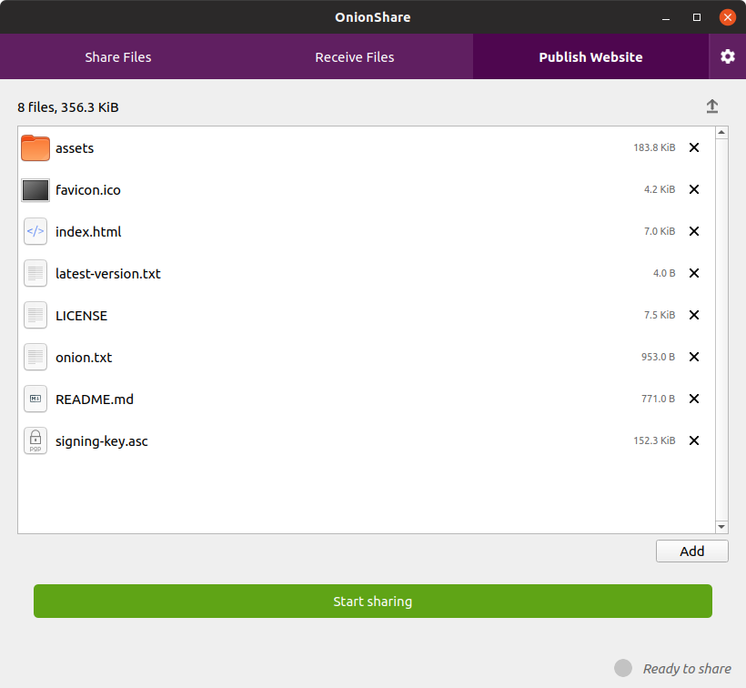
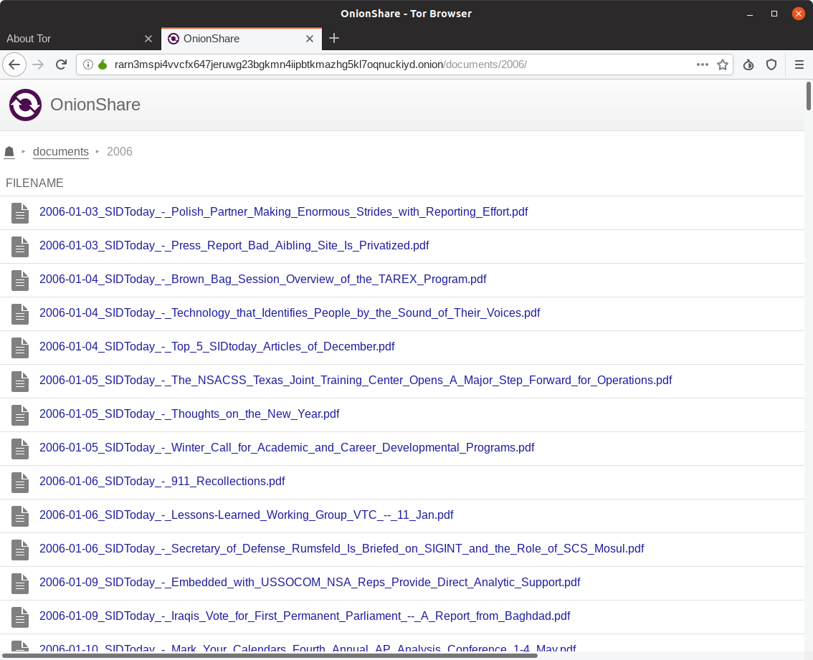
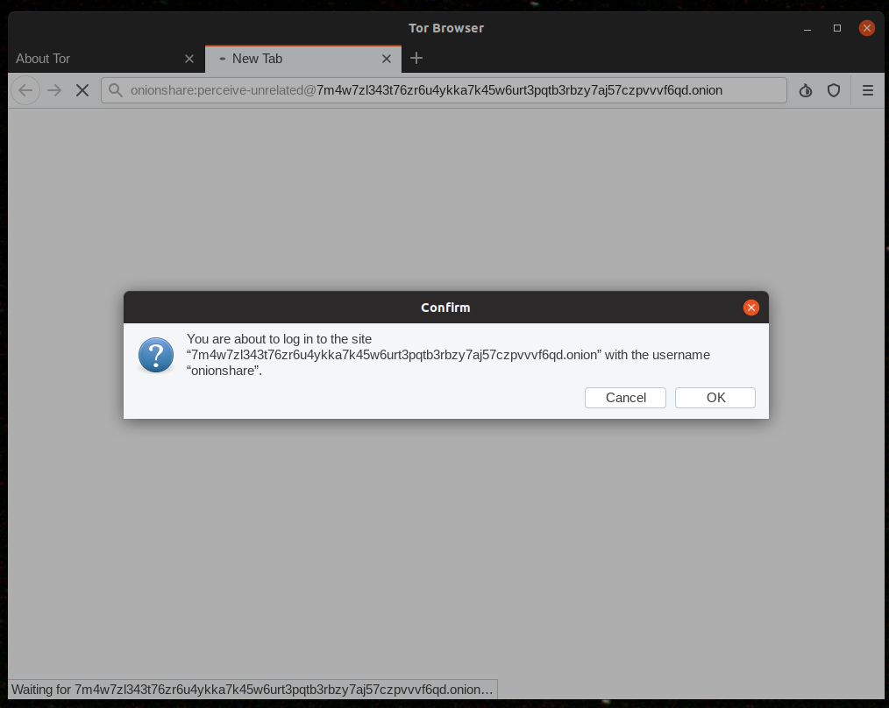
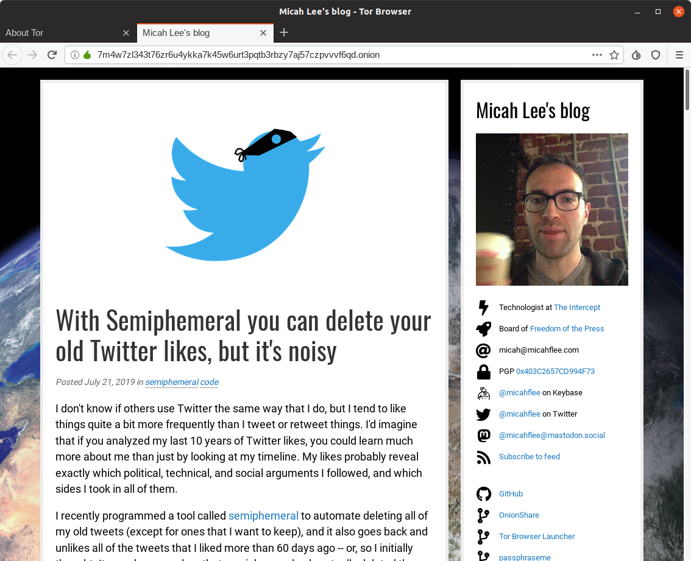
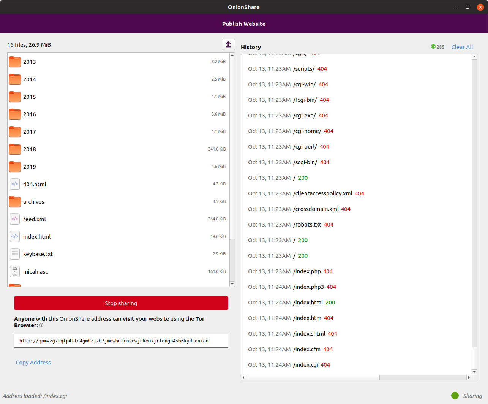
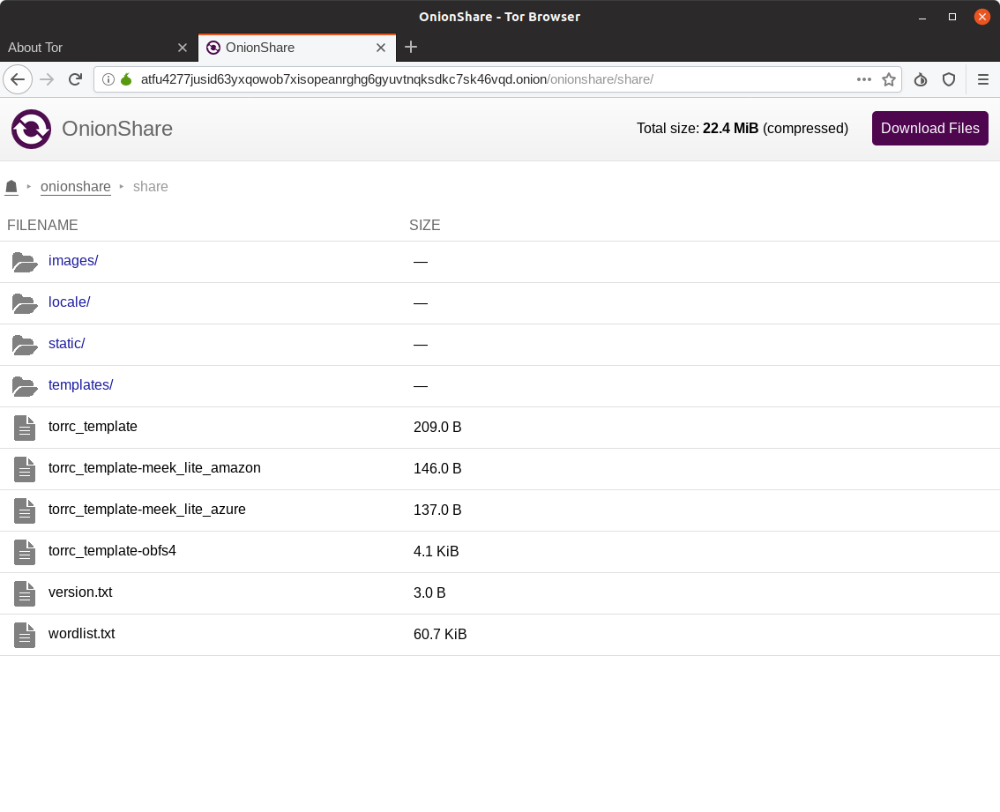

New version of OnionShare makes it easy for anyone to publish anonymous, uncensorable websites
I’m excited to announce that OnionShare 2.2 is released! You can download it from onionshare.org.
When I first wrote OnionShare in 2014, it let you anonymously and securely send files to people. It worked like this: OnionShare zips up the files, starts a local web server on your computer with a link to this zip file, makes this website accessible as a Tor onion service, and shows you the URL of the web server. You send someone this .onion URL, they load it in Tor Browser (loading the website hosted directly on your computer), and then they can download the zip file. As soon as the download is complete, OnionShare shuts down the web service.
In the years since then it has gotten a whole lot better (largely thanks to a growing community of volunteer contributors). Instead of just sending files, you can use it to receive files now, allowing you to turn your computer into an anonymous dropbox. But it has always worked the same way: hosting an anonymous website locally on your computer. But since OnionShare hosts a website on your computer anyway, why not use it to host actual websites?
In addition to the “Share Files” and “Receive Files” tabs, OnionShare 2.2 introduces the “Publish Website” tab. You drag all of the files that make up your website into the OnionShare window and click “Start sharing.” It will start a web server to host your static website and give you a .onion URL. This website is only accessible from the Tor network, so people will need Tor Browser to visit it. People who visit your website will have no idea who you are – they won’t have access to your IP address, and they won’t know your identity or your location. And, so long as your website visitors are able to access the Tor network, the website can’t be censored.
Here are some things to keep in mind about how website publishing in OnionShare works:
If any folder in the website that you’re sharing includes an index.html file, then when someone loads that folder in Tor Browser it will load that html file. If any folder doesn’t include an index.html file, it will show a directory listing instead. So you could, for example, publish a website that’s just a bunch of files without any html, and people who load it in Tor Browser will able to browse your files and folders and download individual files.

When sharing something that’s not public, OnionShare now uses HTTP basic authentication. So the URLs that you share look like http://onionshare:[password]@[address].onion now. When someone loads the URL in Tor Browser, it will ask them if they want to login first, like this:

When they click OK, the URL in the address bar no longer contains the onionshare:[password] part, and just looks like a normal website. (This protects against shoulder surfing, where an attacker looks at someone’s screen to see the OnionShare URL and visit it themselves.)

If you want to publish your website for anyone to see, you can always go to settings and enable “public mode”, which simply doesn’t use a username and password anymore.
If you want to use OnionShare to publish a website that you intend to remain online for a long time, it’s important to remember that your computer itself is literally the web server. If you turn off your computer, or even just suspend your laptop, the website will go down. To prevent this, you’ll have to use a computer that’s always turned on for this. You’ll also probably want to go into settings and check “Use a persistent address” – this means that if you close OnionShare and re-open it again (for example, if you have to install updates on the computer and reboot it), the URL will stay the same the next time you start the server. If you don’t use a persistent address, every URL is temporary, and there’s no way to re-use an old URL.
Another thing that’s new is that OnionShare will now show you exactly what web requests people are making to your website (you get to see this when sharing and receiving files too, not just for publishing websites). For example, here’s a website hosted by OnionShare getting scanned with the nikto web vulnerability scanner.

And finally, since we put in all of the work to make it so you can browse through directory listings when publishing a website, we also made it so you can similarly browse through folders that are being shared when just sharing files, so people can see exactly what files they’re about to download before downloading them.

And if you go into settings and uncheck “Stop sharing after files have been sent” (this is the setting that makes the server shutdown after the first person downloads the files you’re sharing), then people will also be able to download individual files that you’re sharing, instead of only having the option to download everything at once.
I hope you enjoy the new OnionShare!